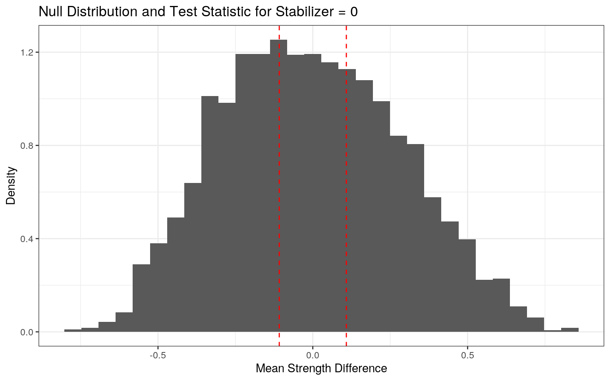
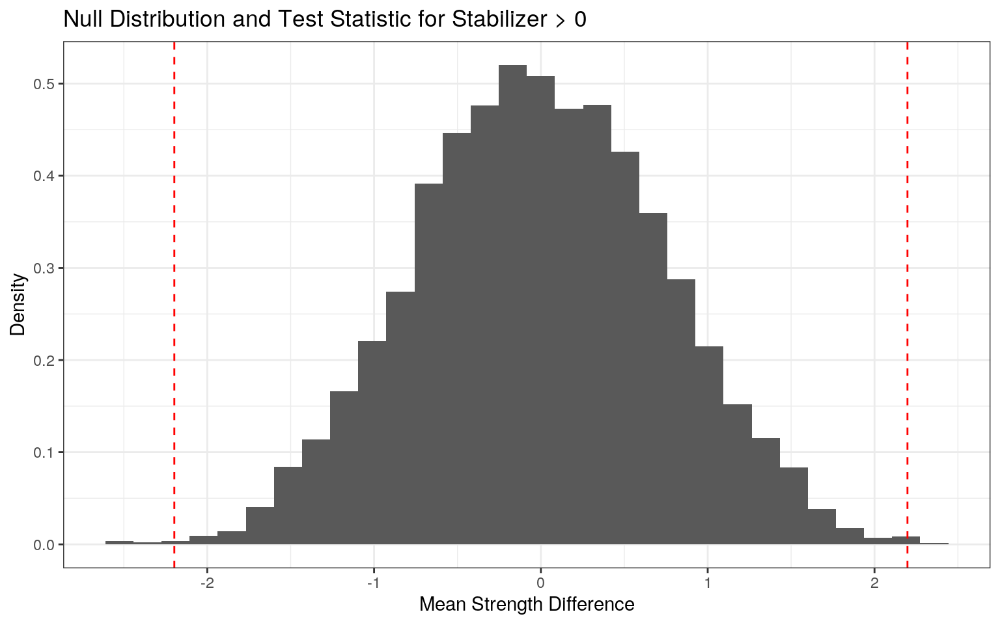
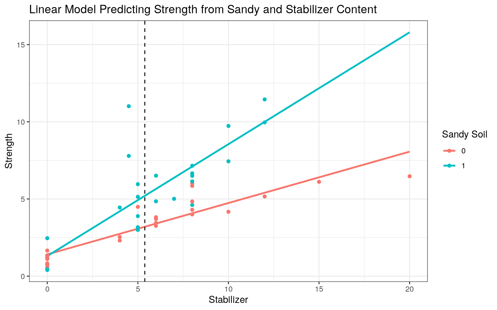
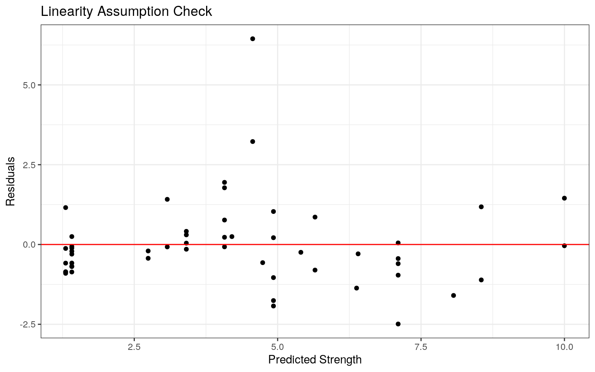
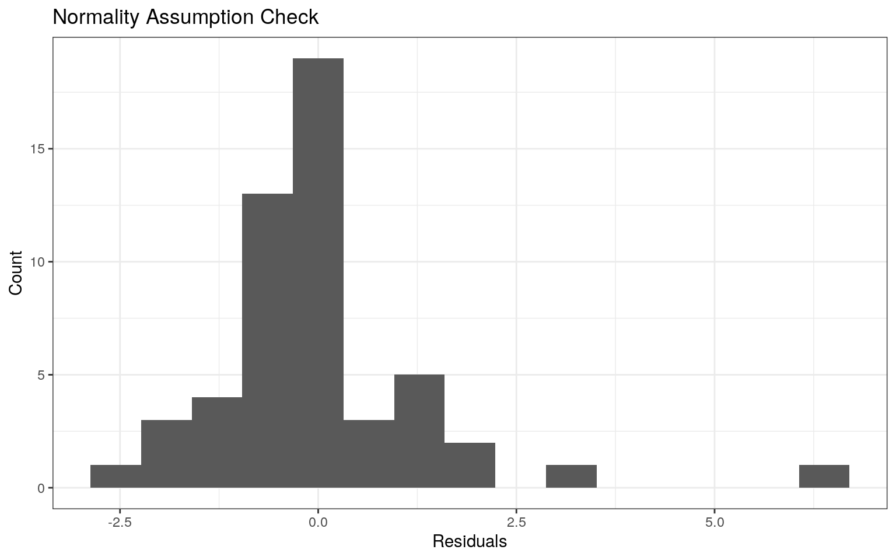
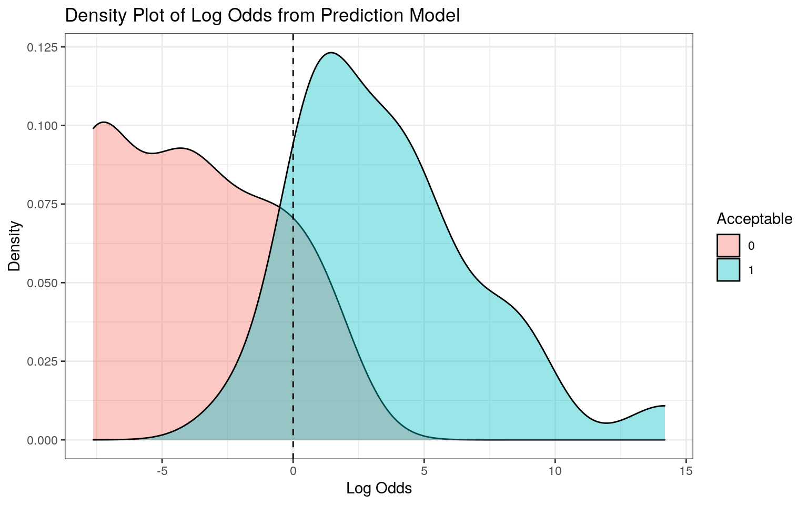
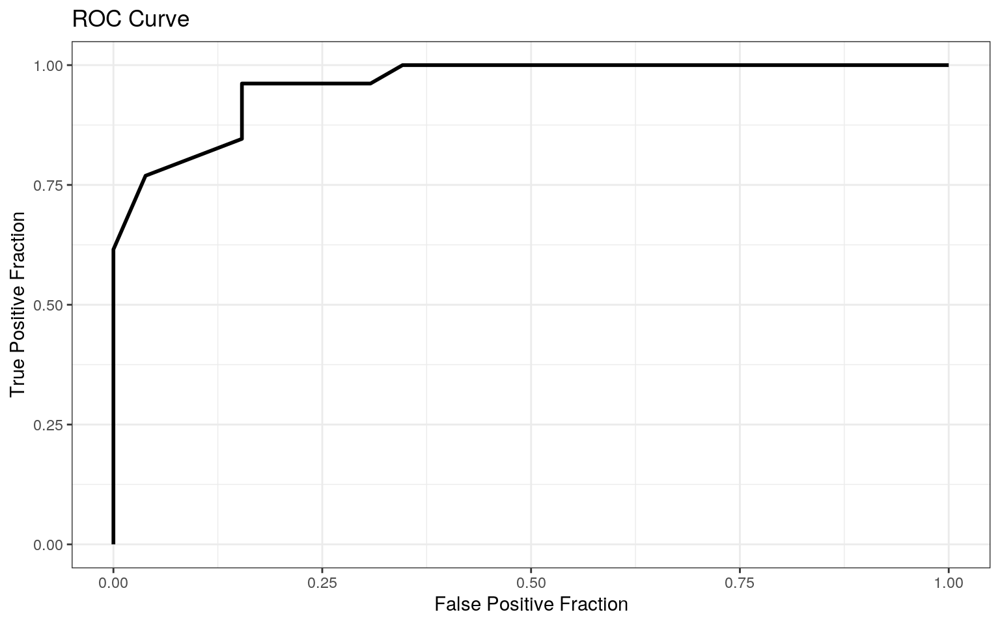

Rammed earth construction is an ancient technique using local soils that are compacted and sometimes mixed with chemical stabilizers such as cement to form structural elements. This method has attracted renewed interest throughout the world due to its social, economic, and environmental benefits. Research has shown that the engineering properties of rammed earth are directly related to those of the soil from which it is built. For this reason, we will assess in this report these relationships between the properties of rammed earth and its soil. We will use a dataset that I have gathered from tens of studies in the literature, which includes information from laboratory tests on rammed earth and the soil it was built from. A glimpse of the data is shown below. There are 52 observations and 9 variables. The soil properties include the Liquid Limit LL, which is a measure of how much the soil behaves like a fluid, the Plasticity Index PI, which measures how much the soil expands and shrinks due to water, percentage of Sand in the soil Sand, a binary variable whether the soil is considered sandy or not Sandy, Soil Class Soil_Class, which is a two-letter classification assigned to the soil based on its properties, and finally the ratio of clay to sand in the soil ClaySandRatio. The rammed earth properties include the amount of chemical stabilizers added in percentage of soil weight (if any) Stabilizer, the Strength of rammed earth Strength, and whether it is considered acceptable for construction or not Acceptable. We will assess if the acceptability of rammed earth can be associated with specific soil properties and whether the strength of rammed earth can be predicted from soil properties.
# Load packages
library(tidyverse)
library(sandwich)
library(lmtest)
library(plotROC)
library(glmnet)
# Read soil data
RE <- read_csv("RammedEarthData.csv")
glimpse(RE)## Rows: 52
## Columns: 9
## $ LL <dbl> 15.6, 15.4, 26.1, 18.0, 24.8, 34.5, 15.4, 17.3, 22.3, 38.5, 27.0, 27.0, 40.…
## $ PI <dbl> 3.1, 4.0, 13.8, 9.7, 13.4, 18.4, 5.3, 7.9, 12.1, 23.3, 10.5, 10.5, 21.0, 21…
## $ Sand <dbl> 70.0, 70.0, 70.0, 70.0, 50.0, 40.0, 75.0, 85.0, 80.0, 60.0, 82.0, 82.0, 50.…
## $ Stabilizer <dbl> 0.0, 4.5, 0.0, 0.0, 0.0, 0.0, 5.0, 4.5, 5.0, 6.0, 0.0, 12.0, 5.0, 8.0, 5.0,…
## $ Strength <dbl> 0.40, 7.79, 0.72, 0.44, 0.55, 0.72, 5.96, 11.01, 5.14, 3.45, 1.18, 9.96, 4.…
## $ Acceptable <dbl> 0, 1, 0, 0, 0, 0, 1, 1, 1, 0, 0, 1, 1, 1, 0, 1, 0, 1, 1, 0, 1, 0, 1, 1, 1, …
## $ Sandy <dbl> 1, 1, 1, 1, 0, 0, 1, 1, 1, 0, 1, 1, 0, 0, 0, 0, 1, 1, 1, 1, 1, 1, 1, 1, 1, …
## $ Soil_Class <chr> "SM", "SM", "SC", "SM", "CL", "CL", "SM", "SW", "SW", "SC", "SW", "SW", "SC…
## $ ClaySandRatio <dbl> 0.4, 0.4, 0.4, 0.4, 1.0, 1.5, 0.3, 0.2, 0.3, 0.7, 0.2, 0.2, 1.0, 1.0, 0.5, …We will perform a one-way MANOVA testing whether at least one of 5 numeric response variables (LL, PI, Sand, Strength, and ClaySandRatio) differ by Soil Classification Soil_Class. We expect that the soil properties (LL, PI, Sand, and ClaySandRatio) definitely differ for some soil classes, as the soil class is assigned based on these properties. However, it would be interesting to see if the strength of the rammed earth Strength shows difference among soil site class. Based on the summary of results below, significant differences were found for at least one of the soil classes and for at least one of the numeric variables, Pillaitrace=1.46, pseudoF(15,138)=8.8, p<0.0001. Thus next, we will perform univariate ANOVAs to find response(s) showing a mean difference across soil classes.
# Perform MANOVA
man <- manova(cbind(LL, PI, Sand, Strength, ClaySandRatio) ~ Soil_Class, data = RE)
summary(man)## Df Pillai approx F num Df den Df Pr(>F)
## Soil_Class 3 1.4626 8.7526 15 138 6.477e-14 ***
## Residuals 48
## ---
## Signif. codes: 0 '***' 0.001 '**' 0.01 '*' 0.05 '.' 0.1 ' ' 1Univariate ANOVAs for each dependent variable were conducted as follow-up tests to the MANOVA, which were found to be different for at least one soil class for all 5 response variables, with p<0.001 for all soil variables (LL, PI, Sand, and ClaySandRatio) and p<0.05 for the rammed earth strength variable (Strength). Thus, as expected, the soil properties definitely differ for at least one soil class, and interestingly, we were able to verify that the strength of rammed earth also differs for at least one site class. This supports the idea in the literature that the engineering properties of rammed earth are directly related to those of the soil from which it is built, and that some soil classes are preferred for rammed earth construction. Next, we will perform post-hoc t tests to find which soil classes differ.
summary.aov(man)## Response LL :
## Df Sum Sq Mean Sq F value Pr(>F)
## Soil_Class 3 1540.6 513.53 13.118 2.215e-06 ***
## Residuals 48 1879.1 39.15
## ---
## Signif. codes: 0 '***' 0.001 '**' 0.01 '*' 0.05 '.' 0.1 ' ' 1
##
## Response PI :
## Df Sum Sq Mean Sq F value Pr(>F)
## Soil_Class 3 1314.83 438.28 25.916 4.091e-10 ***
## Residuals 48 811.74 16.91
## ---
## Signif. codes: 0 '***' 0.001 '**' 0.01 '*' 0.05 '.' 0.1 ' ' 1
##
## Response Sand :
## Df Sum Sq Mean Sq F value Pr(>F)
## Soil_Class 3 26675.1 8891.7 97.387 < 2.2e-16 ***
## Residuals 48 4382.5 91.3
## ---
## Signif. codes: 0 '***' 0.001 '**' 0.01 '*' 0.05 '.' 0.1 ' ' 1
##
## Response Strength :
## Df Sum Sq Mean Sq F value Pr(>F)
## Soil_Class 3 68.35 22.782 3.2361 0.03022 *
## Residuals 48 337.92 7.040
## ---
## Signif. codes: 0 '***' 0.001 '**' 0.01 '*' 0.05 '.' 0.1 ' ' 1
##
## Response ClaySandRatio :
## Df Sum Sq Mean Sq F value Pr(>F)
## Soil_Class 3 136.6 45.532 12.706 3.092e-06 ***
## Residuals 48 172.0 3.583
## ---
## Signif. codes: 0 '***' 0.001 '**' 0.01 '*' 0.05 '.' 0.1 ' ' 1Post hoc analysis was performed conducting pairwise comparisons to determine which Soil Classes differed in each variable. A discussion of the total number of tests and significance of the results is presented hereafter.
pairwise.t.test(RE$LL, RE$Soil_Class, p.adj = "none")##
## Pairwise comparisons using t tests with pooled SD
##
## data: RE$LL and RE$Soil_Class
##
## CL SC SM
## SC 0.0080 - -
## SM 2.3e-06 0.0082 -
## SW 3.4e-05 0.0183 0.9166
##
## P value adjustment method: nonepairwise.t.test(RE$PI, RE$Soil_Class, p.adj = "none")##
## Pairwise comparisons using t tests with pooled SD
##
## data: RE$PI and RE$Soil_Class
##
## CL SC SM
## SC 0.95 - -
## SM 4.8e-09 1.7e-08 -
## SW 2.6e-06 4.7e-06 0.61
##
## P value adjustment method: nonepairwise.t.test(RE$Sand, RE$Soil_Class, p.adj = "none")##
## Pairwise comparisons using t tests with pooled SD
##
## data: RE$Sand and RE$Soil_Class
##
## CL SC SM
## SC < 2e-16 - -
## SM < 2e-16 0.0923 -
## SW 2.4e-16 0.0056 0.1809
##
## P value adjustment method: nonepairwise.t.test(RE$ClaySandRatio, RE$Soil_Class, p.adj = "none")##
## Pairwise comparisons using t tests with pooled SD
##
## data: RE$ClaySandRatio and RE$Soil_Class
##
## CL SC SM
## SC 8.4e-06 - -
## SM 3.0e-05 0.83351 -
## SW 0.00025 0.76353 0.90819
##
## P value adjustment method: nonepairwise.t.test(RE$Strength, RE$Soil_Class, p.adj = "none")##
## Pairwise comparisons using t tests with pooled SD
##
## data: RE$Strength and RE$Soil_Class
##
## CL SC SM
## SC 0.034 - -
## SM 0.028 0.742 -
## SW 0.020 0.439 0.641
##
## P value adjustment method: noneIn this section, we have performed 1 MANOVA, 5 ANOVAs, and 30 t-tests, which resulted in a total of 36 tests. Across this whole set of tests, the probability that we made at least one type I error is 0.842 (1 - 0.95^36), and thus a bonferroni adjusted significance level of 0.05/36 = 0.0014 should be used. Interestingly, based on this new adjusted significance level, the last post-hoc t test, which tests if there is difference in the strength of rammed earth for different soil classes, shows that there is no significant difference, which is contrary to the general belief in the literature. Some of the soil properties remain significantly different for some soil classes, such as Sand, for which soil group CL (which is a clayey soil, hence the first letter C), is significantly different than soil classes SC, SM, and SW (all of which are sandy, hence the first letter S).
MANOVA makes plenty of assumptions, which are rarely met in practice. In particular, MANOVA assumes multivariate normality of variables, which is likely not met here. In addition, MANOVA assumes homogeneity of within-group covariance matrices, meaning that there is equal variance for dependent variables within each group and equal covariance between any two dependent variables; this again is very likely not met here. Other assumptions exist, but we will limit the discussion for brevity.
An interesting result from the previous section was that there is no significant difference in the strength of rammed earth among different soil classes. So we will explore this in greater depth herein using a randomization test. We will test if there is a significant difference in the mean strength of rammed earth built from sandy soils (Sandy = 1) and clayey/non-sandy soils (Sandy = 0). The general belief in the literature is that sandy soils are better and would give a higher rammed earth strength, but recent studies have challenged this. Our test statistic is the mean strength difference between sandy and non-sandy soils. The null hypothesis is that there is no significant difference in the mean strength between sandy and non-sandy soils, and the alternative hypothesis is that there is.
We will perform the same randomization test on two subsets of our data: (1) samples without an additive stabilizer/cement (Stabilizer = 0), and (2) those with a stabilizer (Stabilizer > 0), simply because the addition of stabilizers is believed to have a different effect on sandy and clayey soils. The resulting null distribution from randomization and the test statistic are potted below. Based on the randomization results, we conclude that the rammed earth strength between sandy and clayey soils is not significantly different for samples without a stabilizer (p-value = 0.743), but it is significantly different for samples with stabilizer (p-value < 0.05). Thus, this suggests that future research should distinguish between stabilized and unstabilized rammed earth when assessing the effect of soil type.
# (1) Samples with no cement/stabilizer
# Set seed so that results don't change
set.seed(348)
# Get actual difference in mean strength
actual_diff <- RE %>% filter(Stabilizer == 0) %>% summarize(mean(Strength[Sandy == 1]) - mean(Strength[Sandy == 0])) %>% pull
diffs <- vector()
# Randomize 5000 times and get a difference each time
for (i in 1:5000) {
temp <- RE %>% filter(Stabilizer == 0)
temp <- temp %>% mutate(Sandy = sample(temp$Sandy))
diffs[i] <- temp %>% summarize(mean(Strength[Sandy == 1]) - mean(Strength[Sandy == 0])) %>% pull
}
mean(diffs > abs(actual_diff) | diffs < -abs(actual_diff))## [1] 0.743# Visualize
data.frame(diffs) %>% ggplot(aes(diffs)) + geom_histogram(aes(y=..density..)) +
geom_vline(xintercept = c(-abs(actual_diff), abs(actual_diff)), color = "red", linetype = 2) +
labs( x = "Mean Strength Difference", y = "Density", color = element_blank()) +
ggtitle('Null Distribution and Test Statistic for Stabilizer = 0') + theme_bw()
# (2) Samples with cement/stabilizer
# Set seed so that results don't change
set.seed(348)
# Get actual difference in mean strength
actual_diff <- RE %>% filter(Stabilizer > 0) %>% summarize(mean(Strength[Sandy == 1]) - mean(Strength[Sandy == 0])) %>% pull
diffs <- vector()
# Randomize 5000 times and get a difference each time
for (i in 1:5000) {
temp <- RE %>% filter(Stabilizer > 0)
temp <- temp %>% mutate(Sandy = sample(temp$Sandy))
diffs[i] <- temp %>% summarize(mean(Strength[Sandy == 1]) - mean(Strength[Sandy == 0])) %>% pull
}
mean(diffs > abs(actual_diff) | diffs < -abs(actual_diff))## [1] 0.0016# Visualize
data.frame(diffs) %>% ggplot(aes(diffs)) + geom_histogram(aes(y=..density..)) +
geom_vline(xintercept = c(-abs(actual_diff), abs(actual_diff)), color = "red", linetype = 2) +
labs( x = "Mean Strength Difference", y = "Density", color = element_blank()) +
ggtitle('Null Distribution and Test Statistic for Stabilizer > 0') + theme_bw()
In this section, we will build a linear regression model predicting rammed earth strength (Strength, numeric) from whether soil is sandy or not (Sandy, dummy variable), the stabilizer/cement content (Stabilizer, numeric), and their interaction. The reason for this model selection is because we observed in the randomization test that there is a significant effect of the stabilizer content, but which depends on whether the soil is sandy or not. The interpretation of the regression coefficients is as follows:
Intercept: Predicted rammed earth strength for an average stabilizer content, non-sandy soil is 3.203
Sandy: In samples with average stabilizer content, strength is 2.003 higher for sandy compared to non-sandy soils
Stabilizer_c: For every 1-unit increase in stabilizer content, predicted predicted strength increases by approximately 0.333, on average
Sandy:Stabilizer_c: The slope for Stabilizer on Strength is 0.392 greater for sandy soils compared to non-sandy soils
# Mean center stabilizer
RE$Stabilizer_c <- RE$Stabilizer - mean(RE$Stabilizer)
# Linear model predicting strength from whether soil is sandy or not, stabilizer content, and their interaction
fit <- lm(Strength ~ Sandy * Stabilizer_c, data = RE)
summary(fit)##
## Call:
## lm(formula = Strength ~ Sandy * Stabilizer_c, data = RE)
##
## Residuals:
## Min 1Q Median 3Q Max
## -2.4908 -0.7189 -0.1752 0.2620 6.4454
##
## Coefficients:
## Estimate Std. Error t value Pr(>|t|)
## (Intercept) 3.20318 0.27737 11.549 1.85e-15 ***
## Sandy 2.00241 0.39226 5.105 5.64e-06 ***
## Stabilizer_c 0.33276 0.05456 6.099 1.77e-07 ***
## Sandy:Stabilizer_c 0.39187 0.09360 4.187 0.00012 ***
## ---
## Signif. codes: 0 '***' 0.001 '**' 0.01 '*' 0.05 '.' 0.1 ' ' 1
##
## Residual standard error: 1.414 on 48 degrees of freedom
## Multiple R-squared: 0.7637, Adjusted R-squared: 0.7489
## F-statistic: 51.71 on 3 and 48 DF, p-value: 4.538e-15The plot of the linear regression model is shown below. The vertical distance between the two regression lines at the dashed black line is the coefficient Sandy in the linear regression model. Based on the regression results above, the proportion of the variation in the outcome explained by the model is 0.764.
# Plot regression with dashed vertical line of mean stabilizer content
RE %>% ggplot(aes(Stabilizer, Strength, color = as.character(Sandy))) +
geom_smooth(method = "lm", se = F, fullrange = T) +
geom_point() + labs(color = 'Sandy Soil') +
geom_vline(xintercept=mean(RE$Stabilizer), lty=2) +
ggtitle('Linear Model Predicting Strength from Sandy and Stabilizer Content') + theme_bw()
In this section, we will visually and formally test the assumptions of the linear regression. First, based on the scatter plot below, it appears that linearity is met as the plot shows no curvy trends in the residuals. Second, we will perform a Kolmogorov-Smirnov and Shapiro-Wilk test to formally test for normality. Based on the test results below, the p-value is not significant (p-value 0.056) for the KS test but it is significant (p-value < 0.001) for the SW test. Based on a visual inspection, it is likely that the residuals are not normally distributed. Third, we will run the Breuch-Pagan test to formally test whether homoskedasticity is met. Based on the Breusch-Pagan test, the p-value is not significant (p-value = 0.47), and thus there is no evidence against the null hypothesis and we conclude that homoskedasticity is met.
# Test Linearity
resids <- fit$residuals
fitvals <- fit$fitted.values
ggplot() + geom_point(aes(fitvals,resids)) +
geom_hline(yintercept=0, color='red') +
ggtitle('Linearity Assumption Check') + theme_bw() +
labs( x = "Predicted Strength", y = "Residuals")
# Test normality
ks.test(resids, "pnorm", sd=sd(resids))##
## One-sample Kolmogorov-Smirnov test
##
## data: resids
## D = 0.18211, p-value = 0.05562
## alternative hypothesis: two-sidedshapiro.test(resids)##
## Shapiro-Wilk normality test
##
## data: resids
## W = 0.82845, p-value = 2.96e-06ggplot()+geom_histogram(aes(resids), bins=15) +
ggtitle('Normality Assumption Check') + theme_bw() +
labs( x = "Residuals", y = "Count")
# Test homoskedasticity
bptest(fit)##
## studentized Breusch-Pagan test
##
## data: fit
## BP = 2.5487, df = 3, p-value = 0.4666Because we concluded that homoskedasticity is met, regression with robust standard errors is not expected to cause significant changes. Based on the results below, the standard errors show very minor changes (less than 0.02) except for the Intercept. For example, using heteroskedasticity robust standard errors results in lower standard errors for the interaction term, and consequently higher t-statistic and lower p-value. The significance of all coefficients remains unaffected, which is expected.
# Regression with Robust Standard Errors
coeftest(fit, vcov = vcovHC(fit))##
## t test of coefficients:
##
## Estimate Std. Error t value Pr(>|t|)
## (Intercept) 3.203183 0.175551 18.2465 < 2.2e-16 ***
## Sandy 2.002408 0.404987 4.9444 9.741e-06 ***
## Stabilizer_c 0.332760 0.057397 5.7976 5.102e-07 ***
## Sandy:Stabilizer_c 0.391874 0.084674 4.6280 2.825e-05 ***
## ---
## Signif. codes: 0 '***' 0.001 '**' 0.01 '*' 0.05 '.' 0.1 ' ' 1# Original SEs for comparison
summary(fit)##
## Call:
## lm(formula = Strength ~ Sandy * Stabilizer_c, data = RE)
##
## Residuals:
## Min 1Q Median 3Q Max
## -2.4908 -0.7189 -0.1752 0.2620 6.4454
##
## Coefficients:
## Estimate Std. Error t value Pr(>|t|)
## (Intercept) 3.20318 0.27737 11.549 1.85e-15 ***
## Sandy 2.00241 0.39226 5.105 5.64e-06 ***
## Stabilizer_c 0.33276 0.05456 6.099 1.77e-07 ***
## Sandy:Stabilizer_c 0.39187 0.09360 4.187 0.00012 ***
## ---
## Signif. codes: 0 '***' 0.001 '**' 0.01 '*' 0.05 '.' 0.1 ' ' 1
##
## Residual standard error: 1.414 on 48 degrees of freedom
## Multiple R-squared: 0.7637, Adjusted R-squared: 0.7489
## F-statistic: 51.71 on 3 and 48 DF, p-value: 4.538e-15Next, we will run regression with bootsrapped standard errors by resampling observations. This might be helpful in this case because the normality assumption was found to be violated. The SEs from bootstrapping is the lowest for the Intercept, in between those of the original SEs and the robust SEs for Sandy, the lowest for Stabilizer_c, and the lowest for the interaction term. Smaller standard errors result in higher t-statistics and consequently lower/more significant p-values. However, because the p-values are all significant (<0.001) for the original SEs, they remain significant here as well.
# Set Seed
set.seed(348)
# Resample Observations
samp_distn <- replicate(5000, {
boot_dat <- sample_frac(RE, replace = T) #take bootstrap sample of rows
fit <- lm(Strength ~ Sandy * Stabilizer_c, data = boot_dat) #fit model on bootstrap sample
coef(fit) #save coefs
})
# Estimated SEs
samp_distn %>% t %>% as.data.frame %>% summarize_all(sd)## (Intercept) Sandy Stabilizer_c Sandy:Stabilizer_c
## 1 0.1655029 0.401602 0.04662094 0.08022176In this section, we will fit a logistic regression model predicting whether the rammed earth was found to be acceptable for construction (Acceptable, binary) from the same explanatory variables we used in the linear model (Sandy, binary, and Stabilizer, numeric) but without interaction. The interpretation of the regression coefficients is as follows:
Intercept: The predicted odds of being acceptable for construction for non-sandy unstabilized soils is 0.0005 (too low!)
Sandy: The odds ratio of being acceptable for construction for sandy soils compared to non-sandy soils is approximately 22.878
Stabilizer: For every 1-unit increase in stabilizer content, the predicted odds of being acceptable for construction multiples by approximately 2.975
# Logistic Regression
fit <- glm(Acceptable ~ Sandy + Stabilizer, data = RE, family = "binomial", maxit=100)
summary(fit)##
## Call:
## glm(formula = Acceptable ~ Sandy + Stabilizer, family = "binomial",
## data = RE, maxit = 100)
##
## Deviance Residuals:
## Min 1Q Median 3Q Max
## -1.66409 -0.14895 -0.01502 0.27707 2.13645
##
## Coefficients:
## Estimate Std. Error z value Pr(>|z|)
## (Intercept) -7.6261 2.7337 -2.790 0.00528 **
## Sandy 3.1302 1.2509 2.502 0.01234 *
## Stabilizer 1.0903 0.3855 2.829 0.00467 **
## ---
## Signif. codes: 0 '***' 0.001 '**' 0.01 '*' 0.05 '.' 0.1 ' ' 1
##
## (Dispersion parameter for binomial family taken to be 1)
##
## Null deviance: 72.087 on 51 degrees of freedom
## Residual deviance: 25.832 on 49 degrees of freedom
## AIC: 31.832
##
## Number of Fisher Scoring iterations: 7# Take exp of coefficients to interpret
coef(fit) %>% exp %>% round(5) %>% data.frame## .
## (Intercept) 0.00049
## Sandy 22.87813
## Stabilizer 2.97517The confusion matrix, which shows model predictions versus true outcomes, is shown below. It appears that the model does a very good job distinguishing acceptable soils from those that are unacceptable for construction based on whether the soil is sandy or not and the amount of stabilizer added. Overall, the model correctly classifies 22 samples that are unacceptable and 24 samples that are acceptable, out of 26 for each.
prob <- predict(fit, data = RE, type = "response")
# Get Confusion Matrix
table(Pred=ifelse(prob>0.5,1,0), Truth=RE$Acceptable) %>% addmargins## Truth
## Pred 0 1 Sum
## 0 22 2 24
## 1 4 24 28
## Sum 26 26 52Based on the diagnostics below, the accuracy of our model is 0.885. meaning that 88.5% of the cases are correctly classified as acceptable or unacceptable. The sensitivity is 0.923, meaning that 92.3% of acceptable soils are correctly classified. The specificity is 0.846, meaning that 84.6% of unacceptable soils are correctly specified. The precision is 0.857, meaning that 85.7% of soils classified acceptable are actually acceptable. Finally, the AUC is 0.959, which quantifies how well we are predicting overall, and this value is >0.9, which is considered a great prediction.
#Accuracy, Sensitivity (TPR), Specificity (TNR), Precision (PPV), and AUC
class_diag(prob, RE$Acceptable)## Acc Sens Spec PPV AUC
## 1 0.88462 0.92308 0.84615 0.85714 0.95932A density plot of the log-odds (logit) colored/grouped by the binary outcome variable Acceptable is shown below. Because there is an overlap in the densities, there will be tradeoff between different metrics based on the selected cutoff value for prediction.
RE$logit <- predict(fit, data = RE) #save predicted log-odds
RE %>% ggplot(aes(logit, fill=as.character(Acceptable))) +
geom_density(alpha=.4) +
geom_vline(xintercept=0,lty=2) + theme_bw() +
labs( x = "Log Odds", y = "Density", fill = 'Acceptable') +
ggtitle('Density Plot of Log Odds from Prediction Model')
The ROC curve is shown below and the AUC value is calculated below using a different method (same answer as before). As previously mentioned, the AUC is 0.959, which is considered a great prediction (>0.9).
ROCplot <- ggplot(RE) + geom_roc(aes(d = Acceptable, m = prob), n.cuts = 0) + theme_bw() +
labs( x = "False Positive Fraction", y = "True Positive Fraction") +
ggtitle('ROC Curve')
ROCplot
calc_auc(ROCplot)## PANEL group AUC
## 1 1 -1 0.9593195In this section, we will make predictions using all soil variables to see if we can distinguish acceptable from unacceptable rammed earth based on different soil properties. There are 7 different soil variables (5 numeric, 1 binary, and 1 categorical). The resulting model has an AUC of 0.987, which implies great prediction. This is not surprising given that we included many variables.
# Only keep soil variables and the binary outcome variable Acceptable
RE <- RE %>% select(-logit, -Strength, -Stabilizer_c)
# Prediction from all variables
fit <- glm(Acceptable ~ ., data = RE, family = "binomial", maxit=100)
prob <- predict(fit, data = RE, type = "response")
class_diag(prob, RE$Acceptable)## Acc Sens Spec PPV AUC
## 1 0.90385 0.92308 0.88462 0.88889 0.98669Based on a 10-fold cross validation, all metric have decreased, indicating worse model prediction and overfitting. Particularly, AUC decreased from 0.987 to 0.863, which although still indicates a good prediction on average, clearly is a sign of overfitting when using all variables.
set.seed(1234)
k = 10 #choose number of folds
data1 <- RE[sample(nrow(RE)),] #randomly order rows
folds <- cut(seq(1:nrow(RE)),breaks=k,labels=F) #create 10 folds
diags<-NULL
for(i in 1:k){
## Create training and test sets
train <- data1[folds!=i,]
test <- data1[folds==i,]
truth <- test$Acceptable
## Train model on training set
fit<-glm(Acceptable~(.), data=train, family="binomial", maxit=100)
probs<-predict(fit, newdata = test, type="response")
## Test model on test set (save all k results)
diags <- rbind(diags,class_diag(probs,truth))
}
diags %>% summarize_all(mean)## Acc Sens Spec PPV AUC
## 1 0.833333 0.816667 0.833334 0.875001 0.863194Because we observed overfitting, we will perform LASSO to select only variables that are of interest and enhance prediction accuracy. The results below show that the retained variables are the sand content in the soil (Sand, numeric), the stabilizer content added (Stabilizer, numeric), and whether the soil is sandy or not (Sandy, binary). All other variables, such as soil class, LL, and PI were dropped.
set.seed(1234)
fit <- glm(Acceptable~(.), data=RE, family="binomial")
RE1 <- model.matrix(fit)
x <- RE1[,-1] # grab response
y <- as.matrix(RE$Acceptable) # grab predictors
cv.lasso1 <- cv.glmnet(x, y, family="binomial")
lasso1 <- glmnet(x, y, family="binomial", alpha=1, lambda=cv.lasso1$lambda.1se)
coef(lasso1)## 10 x 1 sparse Matrix of class "dgCMatrix"
## s0
## (Intercept) -2.412196859
## LL .
## PI .
## Sand 0.004708248
## Stabilizer 0.356966749
## Sandy 0.507896053
## Soil_ClassSC .
## Soil_ClassSM .
## Soil_ClassSW .
## ClaySandRatio .# Form new data set
RE_new <- RE %>% select(Sand, Stabilizer, Sandy, Acceptable)Finally, we will perform cross validation using the LASSO variables. First, the new prediction using all data but only LASSO variables has an AUC of 0.95. After performing a 10-fold cross validation, the AUC remains mostly unchanged, with a mean value of 0.949. The predictions both from all observations and the cross validation are both great and there is no sign of overfitting. Both AUC values are slightly less than that of the full model with all observations (0.987), but the model herein is preferred, especially for out-of-sample predictions.
# Prediction from LASSO variables
fit <- glm(Acceptable ~ ., data = RE_new, family = "binomial", maxit=100)
prob <- predict(fit, data = RE_new, type = "response")
class_diag(prob, RE_new$Acceptable)## Acc Sens Spec PPV AUC
## 1 0.88462 0.92308 0.84615 0.85714 0.9497# Cross Validation
set.seed(1234)
k = 10 #choose number of folds
data1 <- RE_new[sample(nrow(RE_new)),] #randomly order rows
folds <- cut(seq(1:nrow(RE_new)),breaks=k,labels=F) #create 10 folds
diags<-NULL
for(i in 1:k){
## Create training and test sets
train <- data1[folds!=i,]
test <- data1[folds==i,]
truth <- test$Acceptable
## Train model on training set
fit<-glm(Acceptable~(.), data=train, family="binomial", maxit=100)
probs<-predict(fit, newdata = test, type="response")
## Test model on test set (save all k results)
diags <- rbind(diags,class_diag(probs,truth))
}
diags %>% summarize_all(mean)## Acc Sens Spec PPV AUC
## 1 0.853334 0.891667 0.8 0.876667 0.948611